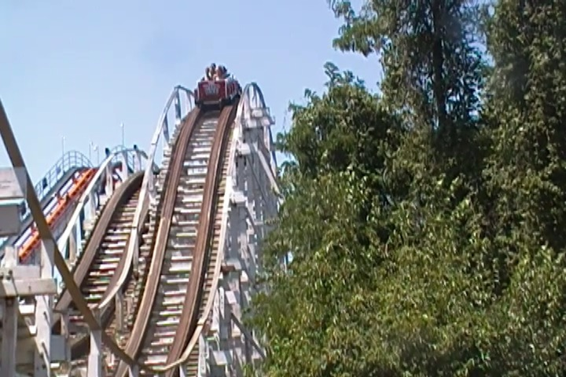
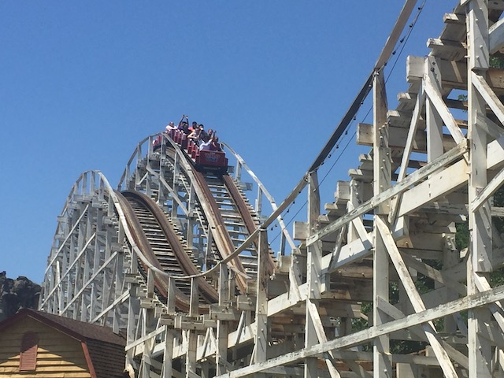
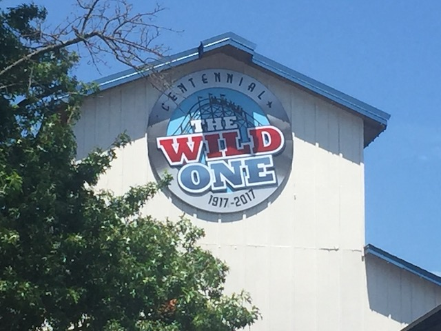

| |

Wild One Review

For today's review, we're traveling back in time to when Six Flags America still existed in order to ride Wild One. Now this ride goes WAY back. It opened at some place called Paragon Park in MA back in 1917. Over 100 years before I officailly rode it in its final home. But yeah. Paragon Park closed down, and Wild One was decided to be saved by Six Flags America, and that's how this coaster is survived thrilling people 100 years after it was built up until Six Flags America itelf closed in 2025. Yeah, it may not have gotten the same sort of historical clout that other old coasters, such as the Coney Island Cyclone, the Giant Dipper, or if you wanna go international, Rutschebanen get. But it's still a fun ride. And since its closure, it got a lot more historical clout and people mourning it. All right. We hopped in the trains (this ride used modern PTC Trains), pulled down the lap bars, and off we went! We rolled through some straight track, around a turn, and began to climb up the lifthill. Looking around from here, we saw pretty much all of Six Flags America and got a really nice view of the park. But of course, we reached the top, and then headed down the first drop. It curved a little, so there was a little bit of laterals. But for the most part, it was just a straight drop. And it gave us a decent amount of speed, which is good. We then headed through an airtime hill. Nothing big or special, but there was some airtime. And that's always a good thing. Yeah, there was a little bit of jackhammering, but it was no big deal. We then rose up into a double up. This may have looked amazing (it probably was back when it ran at Paragon Park and ran with buzz bars), but sadly, there was no airtime to be had here. And we lost all our speed. So now we were just crawling around a turnaround. Bummer, but hey. It's over 100 years old. We then headed into a double down. And yeah. Sorry, but no ejector air here. Sure, there was a little bit of airtime here. But nothing crazy or dramatic (Again, this probably was crazy originally). Went up a slight hill, went through a slight turn, and then, went through another airtime hill. Again, not crazy, but still fun. Wee! Mild Floater Air! Rose up again, went under Wild One. Eh...this was a kind of weird Out and Back coaster. Oh well. Rose up again, and yeah. Lost a lot of speed. Went around a couple turns, got a good view of the Go-Kart track before helixing down. Rose up again, and into the brake run. So that was Wild One. While it was clearly far from the best ride ever, it was a fun ride. And considering how old it was up until its time of death, it was pretty good. And impressive that it lasted as long as it did, living 108 years, which is longer than most people live. It wasn't the best ride ever, but definately worth a ride when you visiting Six Flags America. A real shame that another historical coaster has officially bitten the dust.
7/10
Location: Six Flags America
Opened at Paragon Park in 1917
Moved to Six Flags America in 1986
Died in 2025
Built by: Philadelphia Toboggan Coasters
Last Ridden: July 22, 2019
Wild One Photos


Home
|